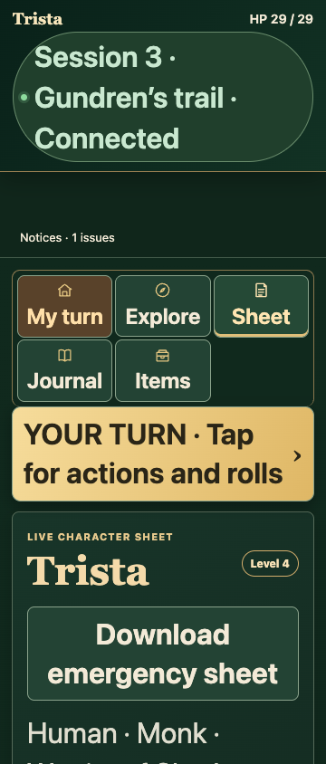
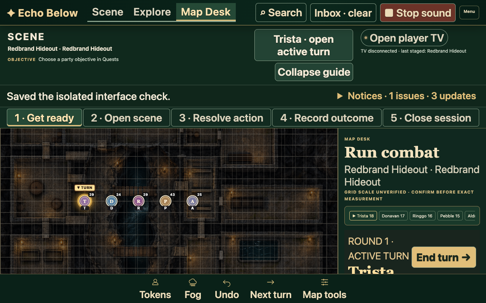
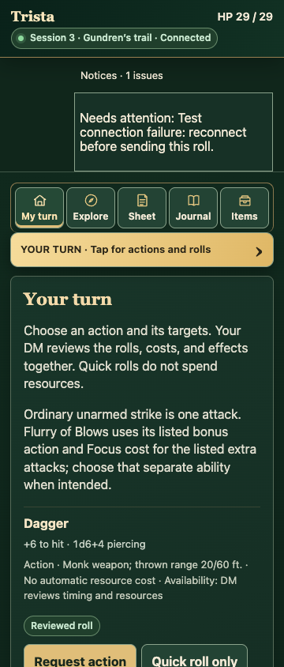
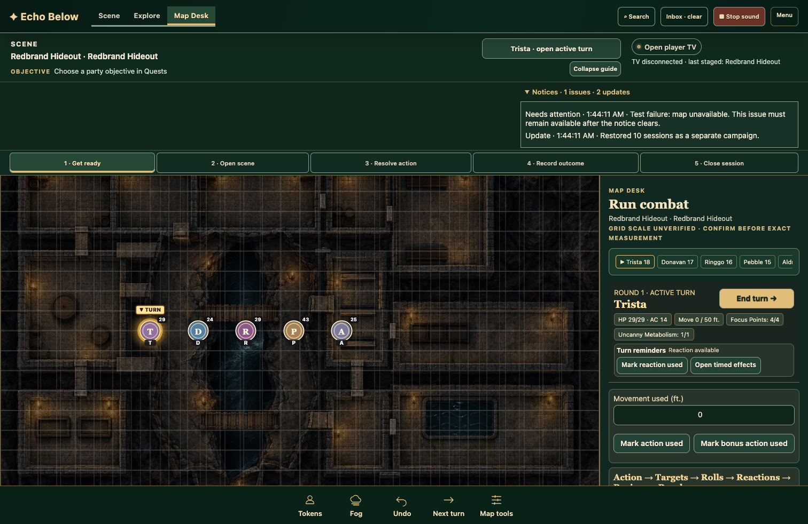
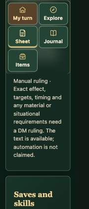

TV and controls visual review — 12 October 2026 Isolated browser screenshots. Physical TV and phones have not been tested. Screenshots are shown at reduced display size; open an image for native dimensions.
TV: decorated and quiet presets Phone: earlier layout and current feedback Historical pre-refinement screenshot; different campaign view. Current Items view at 390 pixels. Large text and retained failures 
Phone text at 200%, 360 pixels. 
DM text at 200%, 1280 × 800. 
Mock connection failure remains in Notices. 
DM notice history in reserved space. Effective narrow viewport 
180-pixel effective viewport, stacked mechanical rows. This is a reflow check, not a physical-device measurement.